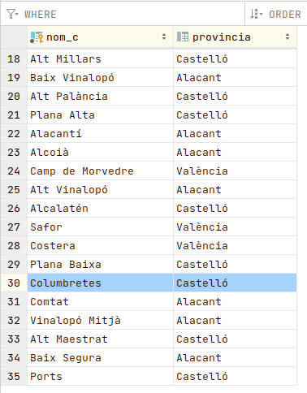

8.4 - Inserció, modificació i esborrat d'objectes
En totes aquestes operacions d'actualització, recordem que farà falta posar-les en una transacció per a que tinguen efecte.
Inserció
Es fa amb el mètode save() de la sessió, passant-li l'objecte que volem guardar. Posem el mateix exemple d'apartats anteriors:. Copieu l'exemple en un fitxer anomenat Exemple_11_Insercio.kt :
package exemples
import classes.Comarca
import org.hibernate.cfg.Configuration
import java.util.logging.Level
import java.util.logging.LogManager
fun main(args: Array<String>) {
LogManager.getLogManager().getLogger("").setLevel(Level.SEVERE)
val sessio = Configuration().configure().buildSessionFactory().openSession()
val t = sessio.beginTransaction ()
val com = Comarca()
com.nomC = "Columbretes"
com.provincia = "Castelló"
sessio.save(com)
t.commit()
sessio.close()
}Podem comprovar en la taula com apareix la comarca que acabem d'introduir:

I evidentment ho podríem comprovar des de DBeaver
Esborrat
Amb el mètode delete, passant-li com a paràmetre l'objecte. Prèviament s'ha d'haver carregar l'objecte amb els mètodes load() o get(). Copieu el següent exemple en el fitxer Exemple_12_Esborrat.kt:
package exemples
import org.hibernate.cfg.Configuration
import java.util.logging.Level
import java.util.logging.LogManager
fun main(args: Array<String>) {
LogManager.getLogManager().getLogger("").setLevel(Level.SEVERE)
val sessio = Configuration().configure().buildSessionFactory().openSession()
val t = sessio.beginTransaction()
val com = sessio.load("classes.Comarca", "Columbretes")
sessio.delete(com)
t.commit()
sessio.close()
}
Modificació
Amb el mètode update(), passant-li com a paràmetre l'objecte. Prèviament haurà d'haver estat carregat amb els mètodes load() o get(), igual que en el cas d'esborrar.
En el següent exemple estem canviant la província del Camp de Morvedre. Per a que no tinga efecte aquest canvi, i no modificar les dades que està utilitzant la resta de companys, observeu com al final estem fent un rollback. Copieu el següent en el fitxer Exemple_13_Modificacio.kt :
package exemples
import classes.Comarca
import org.hibernate.cfg.Configuration
import java.util.logging.Level
import java.util.logging.LogManager
fun main(args: Array<String>) {
LogManager.getLogManager().getLogger("").setLevel(Level.SEVERE)
val sessio = Configuration().configure().buildSessionFactory().openSession()
val t = sessio.beginTransaction()
val com = sessio.load("classes.Comarca", "Camp de Morvedre") as Comarca
com.provincia = "Castelló"
sessio.update(com)
t.rollback()
sessio.close()
}El mètode update() és específic per a fer actualitzacions d'un objecte que ja existia a la Base de Dades. Però també podríem utilitzar save(). És a dir, save() sempre funciona. Si no existeix l'objecte el crea (crea les files oportunes a la Base de Dades), i si ja existia, l'actualitza. En canvi update() només funciona amb actualitzacions.
Llicenciat sota la Llicència Creative Commons Reconeixement NoComercial CompartirIgual 2.5